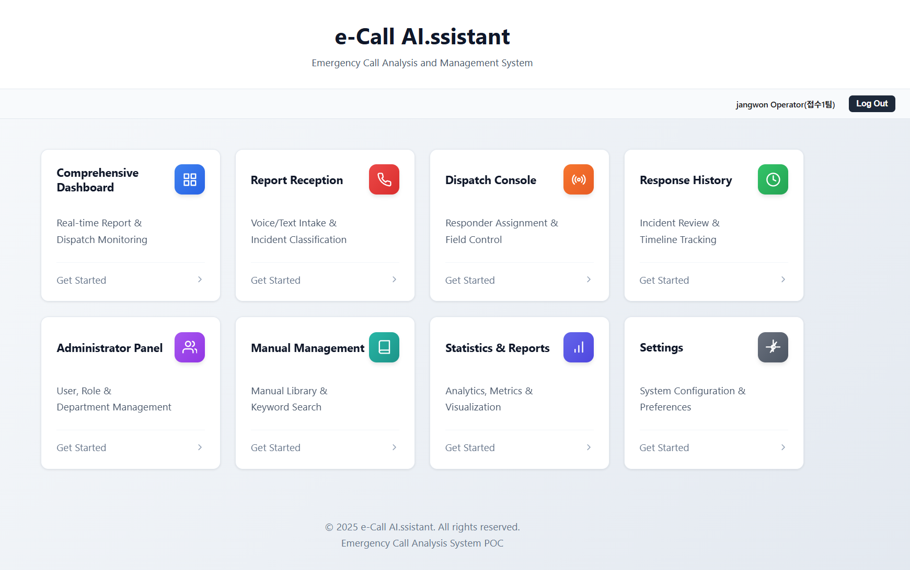
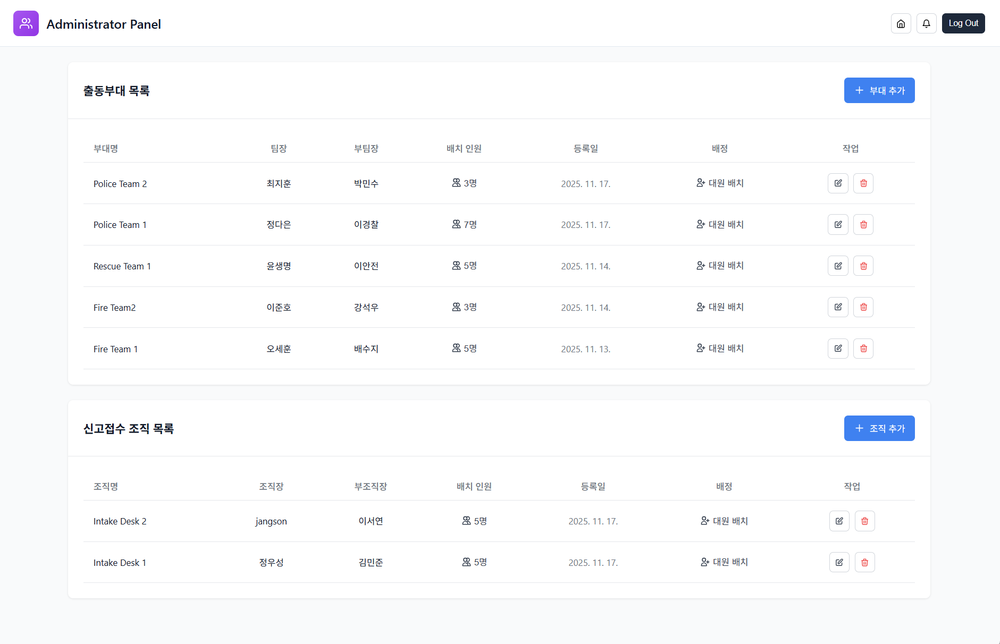
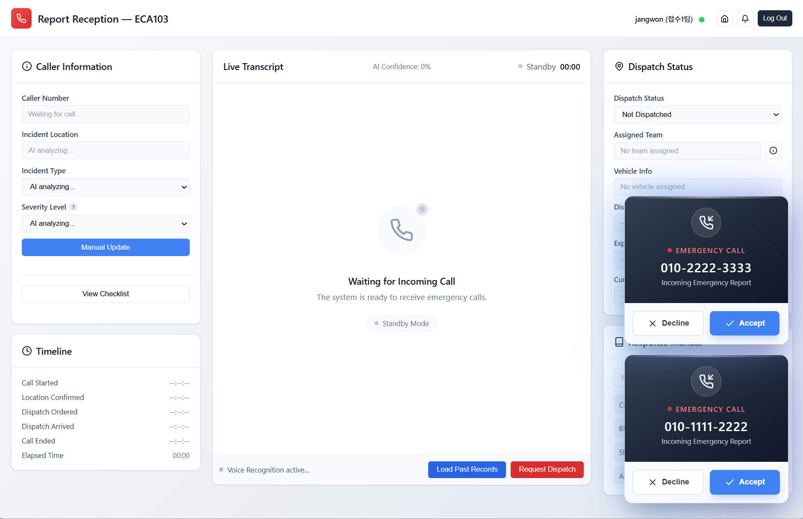
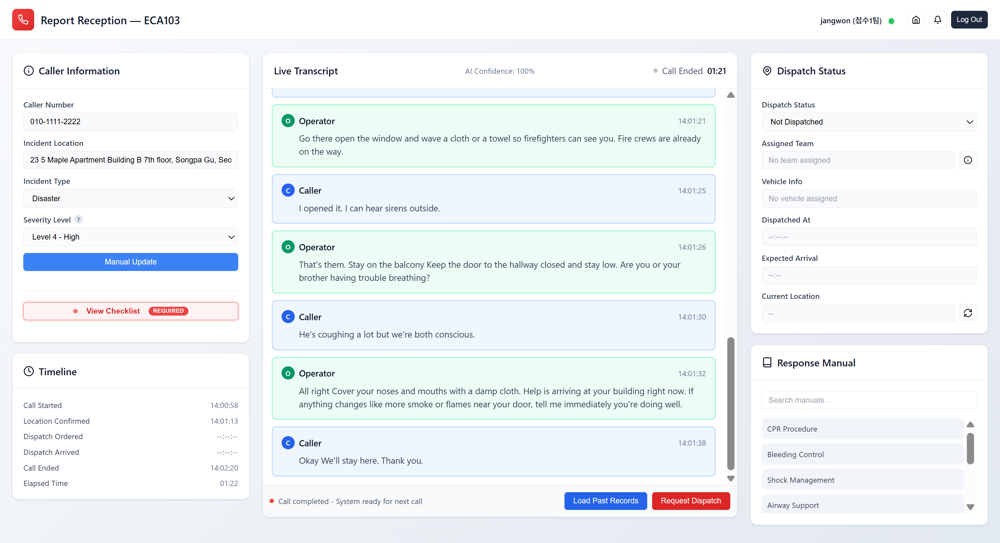
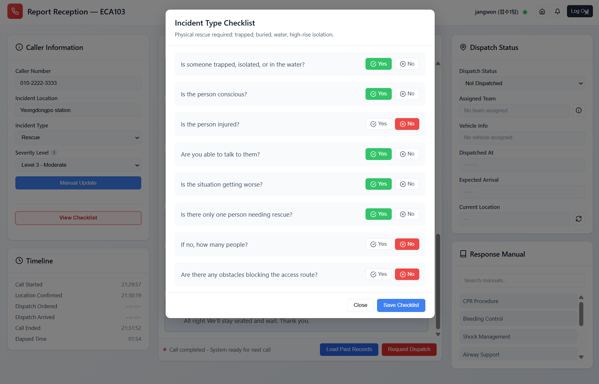
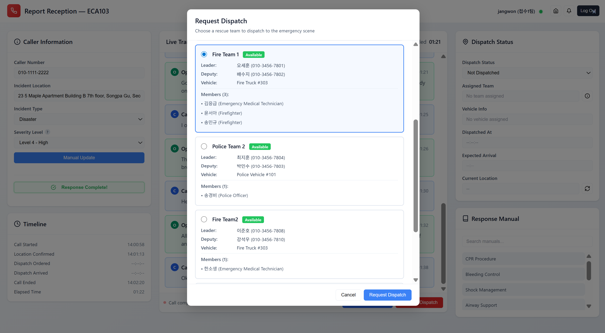
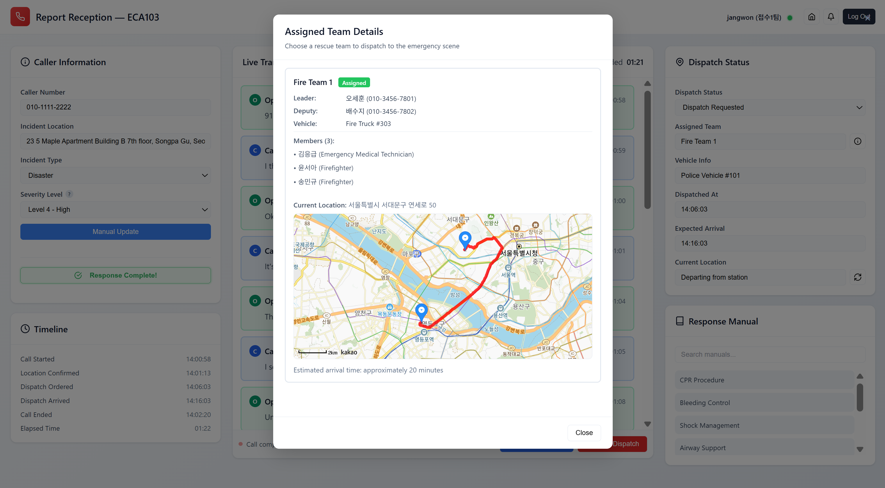
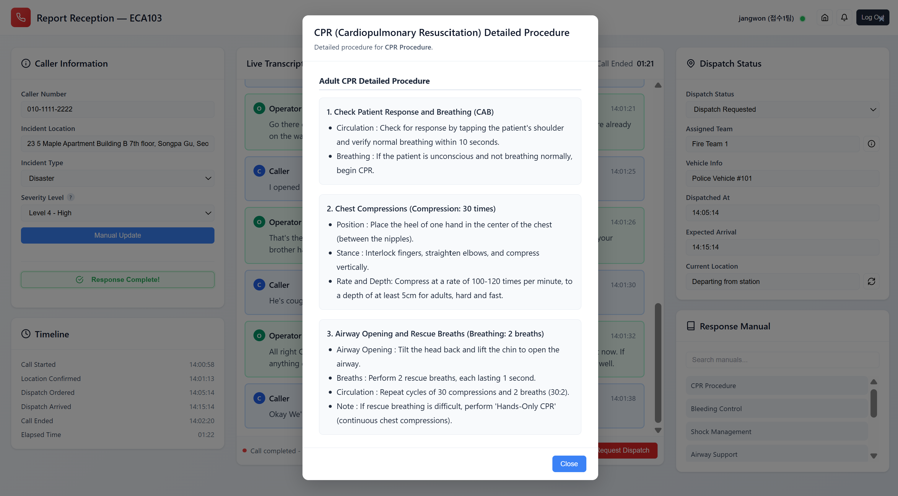
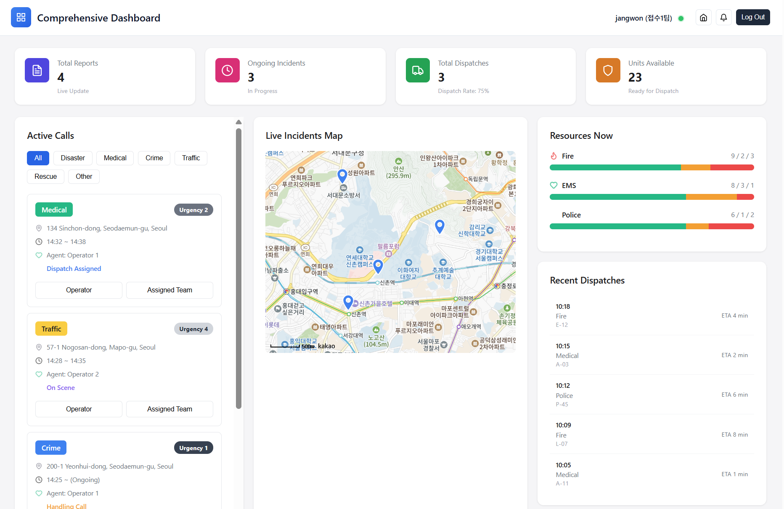
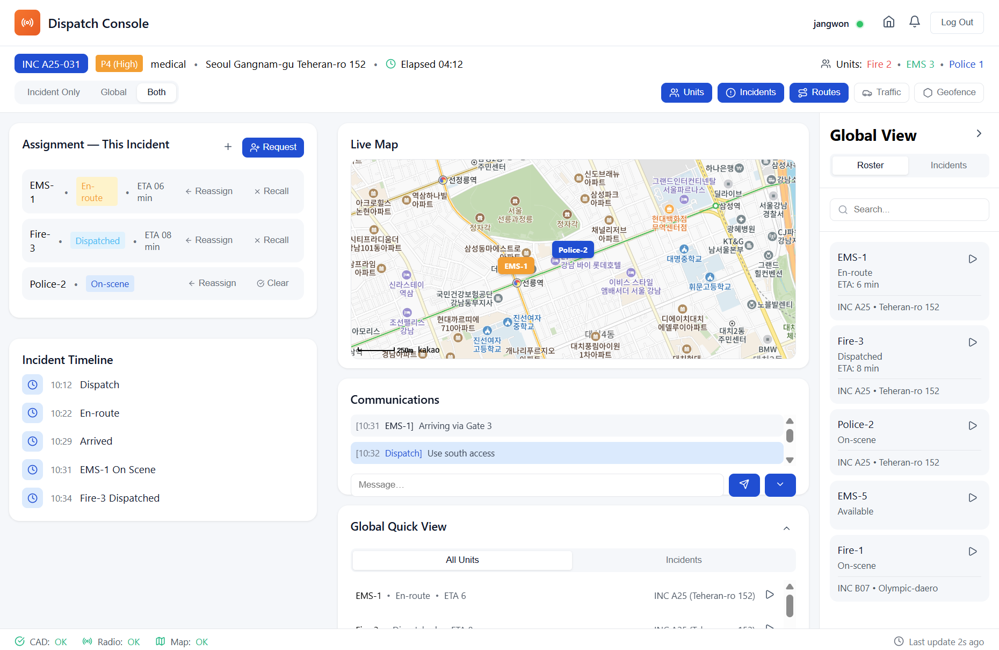

112/119 긴급신고 전화를 실시간으로 분석해 위험도·사건 유형·출동 부대를 자동 판단합니다.
STT로 변환된 신고 내용을 LLM이 실시간 분석하고, 사건 유형별 매뉴얼과 출동 부대를 자동 추천합니다.
5개 LLM을 직접 설계한 기준으로 비교 평가하고, 비용·성능 균형이 가장 우수한 모델을 선정했습니다.
·분류 결과를 바탕으로 대응 매뉴얼과 출동 부대가 즉시 추천되고, 기록은 Supabase에 저장됩니다.
·평균 응답 2.1초 / STT·LLM 이중화 폴백 구조로 무중단 운영을 보장합니다.
시스템 아키텍처
User
📱
신고자
🎧
신고접수 대원
🚑
출동대원
Internal Resources
Client Layer (HTML)
대시보드
신고 접수
출동 콘솔
신고 이력
통계·보고
부서 관리
매뉴얼
환경설정
Backend Layer (Spring Boot)
REST API Controllers
WebSocket /ws/voice
Service Layer
Data Layer (Supabase / PostgreSQL)
Caller
Operator
Emergency
Dispatch
Unit
Storage
External Resources
Naver Clova Speech API
폴백 → Azure Speech
음성 텍스트 변환 (STT)
발화자 분리 (Diarization)
OpenAI GPT-4o-mini
폴백 → claude-haiku
신고자 위치 정보
사건 유형 분류
사건 위험도 평가
AI 출동 부대 추천
Kakao Maps API
주소 변환 / Geocoding
출동지도 시각화
실제 동작 화면
① 메인 허브 & ② 시스템 관리

메인 허브
Comprehensive Dashboard · Report Reception · Dispatch Console · Response History · Administrator Panel 등 8개 모듈 카드 레이아웃

Administrator Panel
출동부대(Police / Rescue / Fire) · 신고접수 조직 CRUD 관리
③ 신고 접수 흐름 — 대기 → STT 분석 → 체크리스트 → 출동 배차 → 매뉴얼 참조
Step 1

대기 & 신고 수신
Standby 상태에서 긴급신고 수신 팝업
→
Step 2

실시간 STT + AI 분석
화자 분리 전사 · 위치·유형·위험도 자동 분류
→
Step 3

Incident Type Checklist
사건 유형별 구조화 정보 수집 — Yes / No 응답
→
Step 4

출동 배차 요청
AI 추천 팀 선택 · 구성원·차량 확인 후 배차 확정
→
Step 4-1

출동팀 상세 확인
팀 구성원·차량 정보 및 실시간 이동 경로·예상 도착시간 확인
→
Step 5

Response Manual 즉시 참조
통화 중 CPR·출혈 처치 등 매뉴얼 참고하여 세부 절차 안내 가능
④ 종합 모니터링 & 현장 지휘

Comprehensive Dashboard
실시간 KPI · Active Calls · Live Incidents Map · Fire / EMS / Police 자원 현황

Dispatch Console
유닛 실시간 위치 추적 · 현장-지휘 간 통신 · 사건 타임라인
AI 모델 벤치마크 — 5개 LLM 비교
Model
카테고리 정확도
응답시간 점수
비용 점수
일관성
종합 ↑
gpt-4o-mini선정
92.1%
100.0%
99.1%
99.0%
96.5%
gemini-2.5-flash-lite
92.4%
89.9%
100.0%
100.0%
94.4%
claude-haiku
92.8%
92.9%
77.2%
100.0%
89.6%
gemini-2.5-flash
87.1%
50.0%
95.0%
91.7%
80.3%
gpt-4o
89.7%
86.3%
50.0%
99.7%
79.9%
테스트 샘플: 100개 구어체 시나리오 (당황한 신고자 어조, 불완전한 위치, 복합 케이스). 위험도 4–5 고위험 신고를 전체의 66%로 집중 배분. 평균 input ~2,100 / output ~42 tokens 기준 실측 비용 반영.
평가 기준 — 카테고리 정확도 40% · 응답시간 25% · 비용 25% · 일관성 10%. 카테고리 정확도는 exact match 기준. gpt-4o-mini는 응답속도·비용 모두 최고점으로 종합 1위(96.5%, 평균 1.4초, $40.8/yr). gemini-2.5-flash-lite는 가장 저렴($28.8/yr)하고 정확도도 동급이나 응답속도(2.3초)에서 소폭 밀려 2위(94.4%).
gpt-4o는 비용 페널티로 최하위(79.9%, $680.2/yr), gemini-2.5-flash는 평균 응답 5.9초로 실서비스 적용 시 체감 느림(80.3%).
담당 역할 — 기술 판단과 가치 증명
01
시스템 아키텍처 설계
핵심 담당
전체 시스템 구조를 설계했습니다. 신고 인입 → STT → NLU → 접수 화면으로 이어지는
데이터 플로우를 정의하고, 모듈 간 결합도를 낮춰 각 컴포넌트를 독립적으로
교체·확장할 수 있도록 레이어를 분리했습니다.
02
위험도 5단계 산출 로직 설계
핵심 담당
LLM 단독 분류는 실제 신고 환경에서 고위험(4–5단계) 오분류 문제가 반복됐습니다.
112·119 운영 기준을 직접 분석해 위험도 분류 체계를 정의하고,
GPT 문맥 분석과 키워드 패턴 레이어를 결합한 하이브리드 구조로 해결했습니다.
단일 LLM 대비 오분류율을 낮추고 응답 일관성을 높였으며,
이 구조는 도메인 특화 AI 솔루션이 범용 LLM만으로 충분하지 않다는 것을
데이터로 입증한 설계 결정입니다.
03
도메인 특화 STT 후처리 파이프라인
핵심 담당
범용 STT는 긴급신고 구어체 발음 오인식("카이" → "칼", "강판" → "간판")과
화자 구분 문제가 반복됐습니다. 4단계 후처리 파이프라인을 직접 구현해 해결했습니다.
① 문장 분리
정규식 기반 문장 분리로 AI 입력 단위를 정제
② 발음 보정
신고 도메인 핵심 용어 오인식을 정규식으로 교정
③ 화자 태깅
문장 컨텍스트 기반으로 신고자/접수자 자동 구분
④ 세그먼트 병합
동일 화자 3초 이내 발화를 병합해 가독성 향상
도메인 지식(신고 유형 분류 기준, 위험도 판단 규칙)은
각 서비스의 System Prompt에 구조화해 주입했습니다.
04
사건 유형 분류 · 출동 부대 추천
핵심 담당
6개 유형 분류 체계를 정의하고, 분류 결과·위험도·가용 인력을 조합해
최적 출동 부대를 자동 추천하는 로직을 설계했습니다.
단순 분류를 넘어 실제 운영 의사결정까지 자동화한 구조로,
AI가 도메인 워크플로우에 통합되었을 때 어떤 비즈니스 가치를 만드는지를
엔드투엔드로 증명한 기능입니다.
04
LLM 벤치마크 설계 — 정량 기반 모델 선정
핵심 담당
"어떤 LLM을 쓸 것인가"를 직관이 아닌 데이터로 결정했습니다.
초기 영어 시나리오 기반 평가를 실제 신고 환경에 가까운
100개 한국어 구어체 시나리오로 재설계하고,
5개 모델에 정확도·응답속도·비용·일관성 가중치를 적용해 종합 비교했습니다.
gpt-4o-mini가 종합점수(96.5%)와 비용($40.8/yr) 모두에서 균형 잡힌 1위를 기록,
gpt-4o 대비 17배 저렴하면서도 실용적 수준의 성능을 유지함을 수치로 증명했습니다.
05
실시간 대시보드 시각화
공동 참여
신고 현황·위험도 분포·건수 통계를 실시간으로 표시하는 대시보드 개발에 참여했습니다.
Dispatch Console에서 출동 부대의 이동 동선을 실시간으로 모니터링할 수 있습니다.